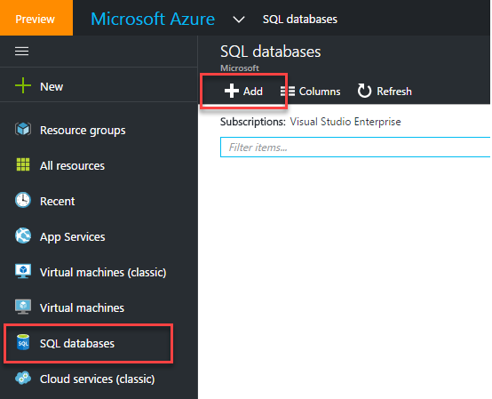
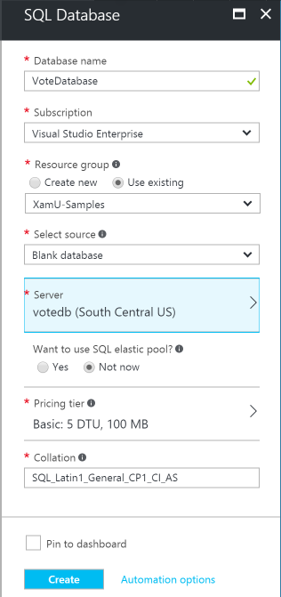
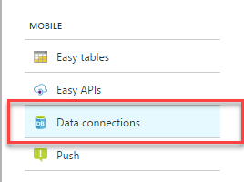
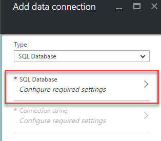
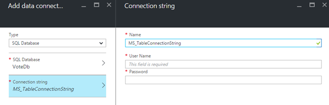

Duration
10 minutes
Goals
In this lab exercise, you will create a new SQL server database in Azure to hold our service side data. We will add this database to the same resource group we defined for our Survey service and then set up a connection string in our Azure app to point to this new database instance.
Challenge
You will be creating and a new SQL server database to your Azure service using the Azure portal. Then you will need to add a new connection string to your survey app to associate this new database with the default "MS_TableConnectionString" name. This database will be used to store the questions and responses from our users.
If you need some guidance, you can use the step-by-step instructions below.
Steps
Create a new Azure SQL server database
- Open a browser window and login to the Azure management portal with your account.
- You can either use the + New > Data + Storage > SQL Database option, or click the SQL databases option in the sidebar and then click the New toolbar button as shown below: 
-
Fill out the required database configuration:
- Select a name for your database - this must be a unique database name for the server you select.
- Make sure to use the same resource group you used for your mobile app.
- Use Blank database as the source - this means no tables are defined.
- Select or create a server in the same region as your app. If you create a new server, you will need to supply admin credentials (user/password) as well as give it a globally unique name since it has a real DNS and IP address associated with it. Keep in mind you can have multiple databases on a single server for cost efficiency.
- Select a pricing tier - any should work for our simple app, here we've selected Basic. If this were a real production application we'd want to use a higher-level tier to ensure we get better performance.

- Click Create to create the database. This will take a few minutes - particularly if you had to define a new server to put the database on.
Add a connection string to your app service
Now that we have a database defined, let's allow our app service to access it by defining a connection string.
- Open your app service - you can either go back to the Azure dashboard by clicking on "Microsoft Azure" in the header if you pinned your service, or click the "App Services" link in the sidebar to list all your defined app services. Locate your app and click on it.
- Scroll down to the "Mobile" section in your app properties blade and select the "Data Connections" item. 
- Click the + Add toolbar button to add a new connection.
- Select "SQL Database" from the Type dropdown and then click the "SQL Database" entry to configure the database. 
- This wil open a new blade to select or create a database and your database you just created should show up in the list - select it and click .
- Select the "Connection String" item from the blade - this will open a sub-blade where you can set the user/password for the database; make sure to use the same credentials you setup when you created the database.
- The "Name" will pre-populate with "MS_TableConnectionString" which is the value we want. Click OK to create the connection string. 
- The portal will display a popup balloon when the connection has been created and you can switch to another item and back to verify that the connection exists in your app.
Summary
In this exercise, you created a database for your Azure service and set up the service to be able to access it with a connection string.